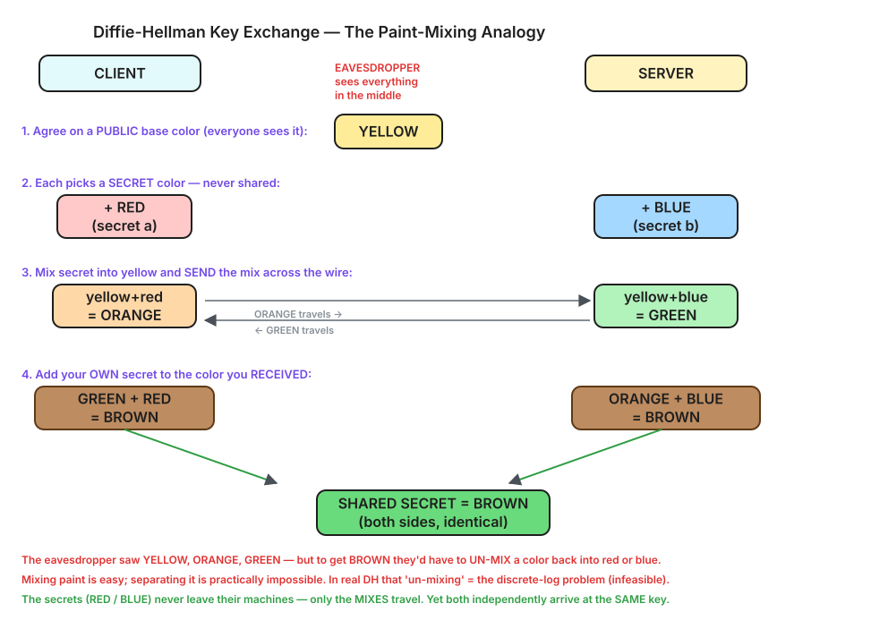
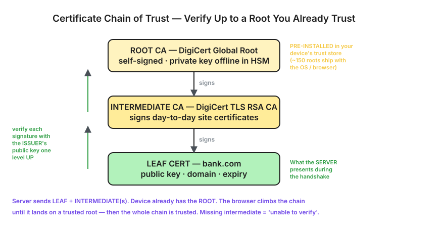

01What Is HTTPS & TLS?
THE PROBLEM IT SOLVES
Without TLS (plain HTTP): You ──"password=hunter2"──► [WiFi sniffer reads it!] ──► Server exposed With TLS (HTTPS): You ──"x9#@kL!8fP2q..."───► [sniffer sees gibberish] ──► Server safe
WHERE TLS SITS
Application (HTTP, WebSocket, SMTP...)
|
TLS <- encrypts / decrypts + verifies identity here
|
TCP <- reliable, ordered delivery
|
IP <- routing across the network
https://, wss:// (secure WebSocket), secure email, etc.02The 3 Guarantees
| Guarantee | Meaning | Stops |
|---|---|---|
| Encryption | Data is scrambled; only the two ends can read it | Eavesdropping |
| Authentication | You're really talking to bank.com, not an impostor | Impersonation / phishing |
| Integrity | Data wasn't altered in transit | Tampering / injection |
03Symmetric vs Asymmetric Encryption
TLS cleverly combines both. Understanding why is the key to the whole protocol.
Symmetric (e.g. AES)
ONE shared key both encrypts & decrypts. Like a physical key: same key locks and unlocks the door.
Fast — simple bit operations, often hardware-accelerated (AES-NI). Encrypts gigabytes/sec.
Weakness: both sides need the same key — how do you share it over an open network?
Asymmetric (e.g. RSA, ECC)
TWO keys — a public/private pair. Public encrypts, private decrypts (or signs). Like a mailbox: anyone drops mail in the slot, only you open it.
Slow — heavy math on 2048-bit+ numbers; ~100–1000× slower than AES.
Strength: can establish a secret safely over an open network.
THE GENIUS OF TLS — USE EACH FOR WHAT IT'S GOOD AT
Asymmetric solves "how do we agree on a key safely?" (hard part, done ONCE)
Symmetric solves "how do we encrypt tons of data fast?" (bulk work, ongoing)
Analogy: send the key by ARMORED TRUCK once (asymmetric),
then drive the SPORTS CAR for all traffic (symmetric).
04The HTTPS Connection — Steps 1, 2, 3
A full HTTPS connection has three conceptual phases, all riding on an already-open TCP connection:
TCP 3-way handshake (SYN / SYN-ACK / ACK) <- opens the raw pipe first
|
v
+-----------------------------------------------------------+
| (1) KEY AGREEMENT asymmetric + Diffie-Hellman |
| -> both sides derive the SAME secret session key |
+-----------------------------------------------------------+
| (2) AUTHENTICATION server presents its CERTIFICATE |
| -> browser verifies identity via the CA chain |
+-----------------------------------------------------------+
| (3) DATA TRANSFER fast symmetric AES with session key |
| -> all HTTP traffic encrypted, cheaply |
+-----------------------------------------------------------+
THE HANDSHAKE ON THE WIRE
Client Server | -- ClientHello: TLS1.3, ciphers, my key-share --> | | | | <-- ServerHello: chosen cipher, my key-share ---- | | + CERTIFICATE (signed by a CA) | | | | (verify cert: CA-signed? right host? not expired?)| | (combine my private + your public -> SAME secret) | | | | ====== encrypted channel (AES-GCM) ============== | | -- GET / (encrypted with session key) ---------> | | <-- 200 OK (encrypted) ------------------------- |
THE HANDSHAKE AS A DIAGRAM

05Step 1 — Agreeing on a Key Without Sending It
The most beautiful trick in cryptography: both sides end up with the same secret key without ever transmitting it. An eavesdropper watching every byte still can't compute it. This is the Diffie-Hellman key exchange.
INTUITION — MIXING PAINT (easy to mix, impossible to un-mix)
1. Agree PUBLICLY on a common color: YELLOW (attackers see this)
2. Each picks a SECRET color (never shared):
Client secret: RED Server secret: BLUE
3. Mix secret with yellow, and SEND the mix:
Client sends: yellow+red = ORANGE -->
Server sends: yellow+blue = GREEN <-- (attackers see these)
4. Add your OWN secret to what you RECEIVED:
Client: GREEN + own RED = yellow+blue+red = BROWN
Server: ORANGE + own BLUE = yellow+red+blue = BROWN
-> BOTH get the SAME BROWN = shared secret
Attacker saw yellow, orange, green — but to make brown they'd need to
UN-MIX a color back into red or blue. Separating mixed paint is infeasible.

↓ dh-paint.excalidraw Open in Excalidraw
THE ACTUAL MATH (modular exponentiation)
PUBLIC (everyone sees): a big prime p and a base g
Client picks secret a Server picks secret b
Client computes A = g^a mod p Server computes B = g^b mod p
----- sends A -----> <----- sends B -----
Client computes B^a mod p Server computes A^b mod p
= (g^b)^a = g^(ab) mod p = (g^a)^b = g^(ab) mod p
| |
+------- SAME VALUE g^(ab) ---------+ = session key
Attacker knows p, g, A, B — but to get a from A = g^a mod p they must
solve the DISCRETE LOG problem: infeasible for 2048-bit+ numbers
(longer than the age of the universe on classical computers).
a and b never leave their machines; only the "mixed" public values A and B travel.06Step 2 — Certificates & the Chain of Trust
Diffie-Hellman agrees on a key but doesn't prove who you're talking to. Without identity, an attacker could do DH separately with each side (man-in-the-middle). The certificate fixes that.
{ domain, public key, expiry } + a digital signature from a trusted Certificate Authority (CA) that vouches for it.
Anyone can verify the signature with the CA's public key. Only the CA (with its private key) can produce a valid one — so it can't be forged.
SIGNING vs VERIFYING (asymmetric, in reverse)
CA SIGNS: hash(cert) encrypted with CA's PRIVATE key = signature YOU VERIFY: decrypt signature with CA's PUBLIC key, compare to hash(cert) match -> genuine + untampered + CA vouched for it OK no match -> forged or altered REJECT
THE CHAIN OF TRUST
+---------------------------------------------------+
| ROOT CA (e.g. DigiCert Global Root) | self-signed;
| private key kept OFFLINE in a vault (HSM) | PRE-INSTALLED on device
+------------------------+--------------------------+
| signs
v
+---------------------------------------------------+
| INTERMEDIATE CA (e.g. DigiCert TLS RSA CA) | signs day-to-day certs
+------------------------+--------------------------+
| signs
v
+---------------------------------------------------+
| LEAF CERT (bank.com) | what the server presents
+---------------------------------------------------+
bank.com because its cert chains up to a root you were "born trusting." The root is self-signed — trusted not by a signature but by being on that pre-vetted list.HOW A SERVER GETS A CERT
- Server generates a key pair (keeps the private key secret).
- Sends a CSR (Certificate Signing Request) with its public key + domain to a CA.
- CA verifies domain control — Domain Validation (prove you own
bank.comvia a DNS record/file), or OV/EV (also verify the legal company). - CA signs the cert with its private key → you install it on your server. (Let's Encrypt automates this via ACME — that's why HTTPS is now free.)
THE CHAIN AS A DIAGRAM

07How the Browser Verifies the Chain
EACH CERT CONTAINS ITS OWN SUBJECT'S PUBLIC KEY
Leaf cert contains -> bank.com's public key Intermediate cert contains -> the Intermediate CA's public key (server-sent) Root cert contains -> the Root CA's public key (device-installed) To verify cert X you need the ISSUER's public key — which lives in the issuer's certificate, the next one up the chain.
VERIFICATION WALKS UP THE CHAIN
leaf --verified by--> INTERMEDIATE's public key (from server-sent cert) intermediate --verified by--> ROOT's public key (from device trust store) root --is it in my trusted store?--> YES -> whole chain trusted You always need the key one level UP to verify the level below. The server hands you every intermediate so the browser can climb until it lands on a root that came pre-installed.
FULL VALIDATION CHECKLIST
- Signature valid at every link (leaf → intermediate → root)
- Chain ends at a root in my trusted store
- Domain matches (cert says
bank.com, I typedbank.com) - Not expired (within validity dates)
- Not revoked (via CRL / OCSP revocation checks)
- Correct purpose (server authentication)
fullchain.pem in Let's Encrypt), not just the leaf.08Step 3 — Fast Symmetric Data Transfer
Once the handshake establishes the shared session key and verifies identity, both sides switch to fast symmetric encryption (AES) for all the real traffic.
Handshake (asymmetric + DH) -> establishes a shared SESSION KEY (slow, once) Data transfer (symmetric AES) -> encrypts ALL traffic (fast, ongoing) Client ── AES(session key, "GET /account") ──► Server (decrypts, reads plain HTTP) Client ◄─ AES(session key, "200 OK ...") ───── Server
TIES BACK TO API GATEWAY & WEBSOCKETS
- An API gateway terminates TLS — it decrypts public traffic, reads the plain HTTP, then routes (and often re-encrypts internally via mTLS).
- Secure WebSockets (
wss://) run over exactly this same TLS channel before the HTTP Upgrade → 101 handshake.